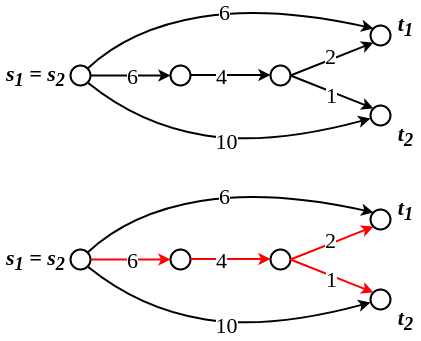
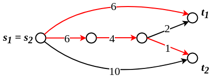
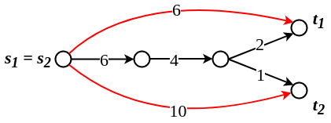
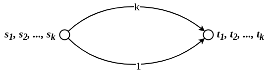
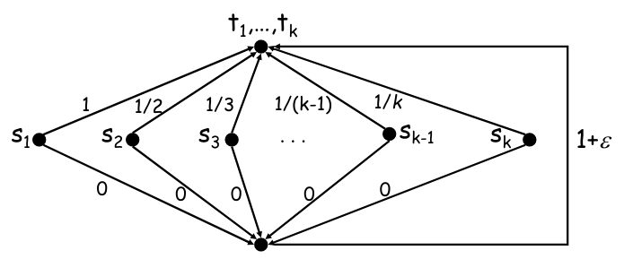
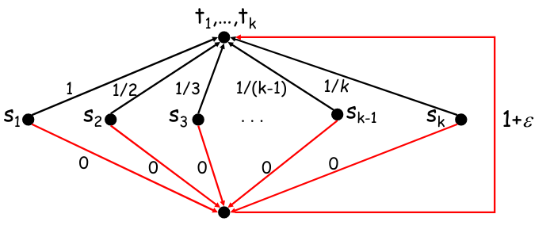
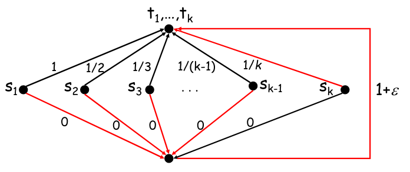
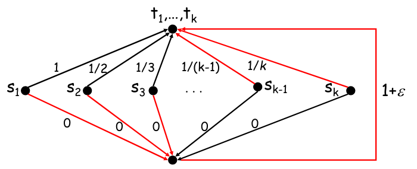

ADRC - Lesson 20
Indice
Network Formation Games
Network Formation Games (in breve NFG) sono dei giochi che modellano come un insieme di player egoistici costruiscono una rete.
Questi gioco possono essere usati nel mondo reale per modellare i fenomeni che generano le reti sociali dei social-network, oppure una rete P2P dinamica.
L'obbiettivo dei partecipanto al gioco è sostanzialmente quello di:
- minimizzare il costo di costruizione della propria porzione di rete.
- massimizzare la qualità dei servizi che la rete riesce ad offrire ai nodi.
Useremo gli equilibri di Nash come qualità che garantiscono la stabilità della rete, e inoltre misereremo il costo sociale come la somma di tutte le spese fatte dai singoli giocatori.
Global Connection Game
In questo gioco abbiamo un grafo diretto \(G(V,E)\) con dei costi \(c_e\) non negativi per ogni arco \(e \in E\).
Ci sono \(k\) giocatori, e ad ogni giocatore \(i\) è associata una coppia di nodi \((s_i,t_i)\) di nodi sorgente e destinazione.
L'obiettivo del giocatore \(i\)-esimo è quello di ottenere una rete in cui la destinazione \(t_i\) è raggiungibile da \(s_i\), pagando il meno possibile il proprio costo di costruzione.
In altri termini, la strategia del giocatore \(i\) è un percorso \(P_i\) da \(s_i\) a \(t_i\), in \(G\).
Date quindi tutte le strategie dei partecipanti \(S = (P_1, P_2, ..., P_k)\), definiamo la rete risultante come \[ NET(S) = \bigcup_{i=1}^{k} P_i \] Dato che un arco \(e\) può essere utilizzato da più di un player, indichiamo con \(k_e(S)\) il numero di player che usano l'arco \(e\) nella loro strategia \(P_i \in S\), ovvero \[ k_e(S) = \vert \lbrace P_i \in S : e \in P_i \rbrace \vert \]
A questo punto possiamo definire il costo del signolo player \(i\) come la quantità
\[
COST_i(S) = \sum_{e \in P_i} \frac{c_e}{k_e(S)}
\]
Alcune volte ci riferiremo a \(k_e(S)\) semplicemente con \(k_e\).
Questa unità di costo dei singoli player è nota come Shapley cost-sharing mechanism, o semplicemente fair mechanism. Il costo sociale della configurazione di strategie \(S\) sarà quindi la somma di tutti costi simboli \[ COST(S) = \sum_{i = 1}^{k} COST_i(S) \]
Infine consideriamo un equilibrio di Nash NE come soluzione del problema.
Inoltre una rete è considerata ottima o socialmente ottima se minimizza il costo costo sociale \(COST(S)\).
Consideriamo la seguente rete in figura. È facile verificare che quella composta dagli archi rossi è la rete con social cost minimo.

Figura 1: Esempio di rete ottima \(S\) con \(COST(S) = 13\).
Purtroppo però questa non è una rete stabile, in quanto il Player1 può decidere di cambiare strategia ed abbassare il suo costo complessivo da 7 a 6.

Figura 2: Il PLayer1 cambia strategia.
La rete risultate non è ancora stabile, e inoltre il costo del Player2 è aumentato da 6 a 1.
Perciò anche Player2 decide di cambiare strategia, abbassando il suo costo a 10.

Figura 3: Il PLayer2 cambia strategia.
A questo punto la rete risulta stabile, con un costo sociale di 16, maggiore di quello ottimo.
Alcune domande che ci possiamo porre in merito a questo gioco sono:
- Esiste sempre una rete stabile per ogni istanza di gioco?
- Possiamo dare un bound al prezzo dell'anarchia
PoAe al prezzo della stabilitàPoS? - Se eseguiamo il gioco in maniera iterativa, è sempre possibile convergere ad un equilibrio, qualsiasi sia la configurazione iniziale?
Price of Anarchy
Consideriamo il gioco nella seguente figura

Figura 4: Esempio
Certamente la soluzione ottima è quella in cui tutti scelgono l'arco di costo 1, con un costo sociale complessivo di 1.
Questo è anche una situazione di equilibrio, in cui a nessuno conviene cambiare strategia, perciò possiamo dire anche che il prezzo della stabilità PoS è 1.
Un'altra situazione di equilibrio è quella in cui tutti scelgono l'arco di costo \(k\).
In tal caso, ognuno pagherà 1, e anche cambiando arco il costo non migliora.
Tale situazione è la peggiore situazione di equilibrio, perciò il costo dell'anarchia PoA sarà pari a \(k\).
Trovata quindi un'istanza in cui PoA è \(k\), possiamo dare come lowerbound generale a PoA \(k\).
Il seguente teorema ci dice (e dimostra) che \(k\) è anche un upperbound alla PoA.
THM The
PoAin the global connection game with \(k\) players is at most \(k\).
Proof Sia \(S \in NEs\) una soluzione generica del problema, ovvero un
NE, e sia \(S^*\) una soluzione ottima che minimizza il costo sociale. Per ogni player \(i\), indichiamo con \(\pi_i\) un cammino minimo in \(G\) tra \(s_i\) e \(t_i\).Sicuramente \(COST_i(S) \leq COST_i(S_{-i}, \pi_i)\), in quanto per definizione \(S\) è un equilibrio di Nash, perciò a nessuno conviene cambiare strategie (tantomeno ad \(i\)).
Inoltre per definizione abbiamo che
\begin{align*} COST_i(S_{-i}, \pi_i) = \sum_{e \in \pi_i} \frac{c_e}{k_e} \leq \sum_{e \in \pi_i} c_e = d_G(s_i, t_i) \end{align*}Osserviamo ora che il costo sociale di una qualsiasi soluzione è pari alla somma del costo di tutti gli archi che lo compongono \[ COST(S^*) = \sum_{i=1}^{k} COST_i(S^*) = \sum_{i=1}^{k} \sum_{e \in P_i} \frac{c_e}{k_e(S^*)} = \sum_{e \in NET(S^*)} c_e \] Perciò, dato che \(S^*\) contiene almeno un cammino per ogni coppia di \(s_i,t_i\), e dato che tali cammini non è detto che siano ottimi, avremo che \[ COST_i(S) \leq COST_i(S_{-i}, \pi_i) \leq d_G(s_i, t_i) \leq COST(S^*) \]
Applicando questa disuguaglianza per tutti e \(k\) i player otteremo che \[ COST(S) = \sum_{i=1}^{k} COST_i(S) \leq k \cdot COST(S^*)\\ \implies PoA = \max_{S \in NEs}{\frac{COST(S)}{COST(S^*)}} \leq \frac{k \cdot COST(S^*)}{COST(S^*)} = k \]
Price of Stability and Potential Function Method
Fissiamo un valore \(\varepsilon > 0\) anche molto piccolo, e consideriamo la seguente istanza di gioco

Figura 5: Esempio, con \(\varepsilon > 0\) molto piccolo.
Certamente la strateggia ottima sarebbe che tutti scelgano la strada che passa per l'arco di costo 0 e poi per quello di costo \(1 + \varepsilon\).
In tal caso il costo sociale sarebbe \(\frac{1 + \varepsilon}{k}\).

Figura 6: Strategia di costo sociale ottimo.
Purtroppo questa non è una situazione di equilibrio, in quanto il giocatore \(k\) può scegliere di adottare una strategia migliore, ovvero quella di usare l'arco di costo \(1/k\), risparmiano un fattore \(\varepsilon/k > 0\).

Figura 7: Il player \(k\) migliora la sua strategia.
A questo punto anche al player \(k - 1\) conviene cambiare strategia, usando l'arco diretto \((s_{k-1},t_{k-1})\).

Figura 8: Anche il player \(k - 1\) migliora la sua strategia.
A questo punto è facile convincersi che l'unica configurazione di strategie \(S\) che comporta al stabilità della rete è quella in ogni player \(i\) adotta l'arco diretto \((s_i,t_i)\). In tal caso il costo sociale sarebbe \[ COST(S) = \sum_{i=1}^{k} \frac{1}{i} = H_k \leq \ln{k} + 1 \]
Dato che la soluzione ottima aveva costo \(1 + \varepsilon\), avremo come il prezzo della stabilità sarà all'incirca di \(H_k\).
In questa lezione verranno dimostrati due teoremi fondamentali riguardo il global connection game
THM1
Any instance of the global connection game has a pure Nash equilibrium, and best response dynamics always converges.
THM2
The price of stability in the global connection game with \(k\) players is at most \(H_k\), the \(k\)-th harmonic number.
Per dimostrare entrambi i teoremi è necessario introdurre ed analizzare un nuovo strumenti, le funzioni potenziali (potential functions).
Def (Exact Potential Function)
Per ogni gioco finito \(G\), una funzione potenziale esatta è una funzione \(\Phi\) che ad ogni configurazione di strategie \(S\) associa un valore reale che soddisfa la seguente condizione:
Sia \(S = (S_1, ..., S_k)\), \(S_i' \neq S_i\) una strategia alternativa per il player \(i\), ed \(S' = (S_{-i}, S_i')\), allora \[ \Phi(S) - \Phi(S') = COST_i(S) - COST_i(S') \] In poche parole, date due profili di strategia \(S,S'\) che differiscono per una sola strategia \(i\), avremo che la differenza delle due funzioni potenziali equivale alla differenza dei due costi relativi al player \(i\).
Def (Potential Game)
Qualsiasi gioco per il quale è possibile definire una funzione potenziale esatta, è detto gioco potenziale.
È possibile dimostrare che il global connection game è un gioco potenziale
Lemma1 Il global connection game è un gioco potenziale
Proof data una configurazione di strategie \(S = (P_1, ..., P_k)\), una funzione potenziale per il global connection game è \[ \Phi(S) = \sum_{e \in E} \psi_e(S) \] dove \[ \psi_e(S) = c_e \cdot H_{k_e(S)} \] e \(H_0 = 0\).
Sia \(S'\) una configurazione di strategie che differisce da \(S\) per una sola strategi \(P_i\). \(\Phi\) è ua funzione potenziale per il global connection game se \[ \Phi(S) - \Phi(S') = COST_i(S) - COST_i(S') \]
Supponiamo che \(S\) ed \(S'\) differiscono per le sole strategie \(P_i \neq P'_i\). Se consideriamo solamente gli archi \(e\) che sono in entrambe le strategie o in nessuna delle due, il valore di \(\psi_e(\cdot)\) non cambia.
\begin{align*} \psi_e(S) &= \psi_e(S') \;\; \forall e \in P_i \cap P'_i\\ \psi_e(S) &= \psi_e(S') \;\; \forall e \notin P_i \cup P'_i \end{align*}perciò necessairamente la differenza tra \(\Phi(S)\) e \(\Phi(S')\) deve dipendere dai soli archi \(e\) che sono in una sola delle strategia tra \(P_i\) e \(P'_i\).
Consideriamo l'arco \(e \in P'_i \setminus P_i\). Se in \(S\) sull'arco \(e\) passano \(k_e(S)\) percorsi, in \(S'\) sicuramente ne passerà uno in più, ovvero \(P'_i\). Perciò \(\psi_e(S') = c_e \cdot H_{(k_e(S) + 1)}\). Quindi \[ \psi_e(S') - \psi_e(S) = c_e \cdot (H_{(k_e(S) + 1)} - H_{k_e(S)}) = \frac{c_e}{k_e(S) + 1} = \frac{c_e}{k_e(S')} \]
Simmetricamente, consideriamo un arco \(e \in P_i \setminus P'_i\). Se in \(S'\) sull'arco \(e\) passavano \(k_e(S')\) percorsi, in \(S\) ne passerà sicuramente uno in più, ovvero \(P_i\). Perciò \(\psi_e(S') = c_e \cdot H_{(k_e(S) - 1)}\). Quindi \[ \psi_e(S') - \psi_e(S) = c_e \cdot (H_{(k_e(S) - 1)} - H_{k_e(S)}) = - \frac{c_e}{k_e(S)} \]
In conclusione
\begin{align*} \Phi(S) - \Phi(S') &= \sum_{e \in P_i \setminus P'_i} \psi_e(S) - \psi_e(S') - \sum_{e \in P'_i \setminus P_i} \psi_e(S') - \psi_e(S)\\ &= \sum_{e \in P_i \setminus P'_i} \frac{c_e}{k_e(S)} - \sum_{e \in P'_i \setminus P_i} \frac{c_e}{k_e(S')} = COST_i(S) - COST_i(S') \end{align*}
Assodato che il global connection game è un gioco potenziale, possiamo implicare il THM1 dimostrando i prossimi due teoremi.
THM3 Ogni gioco potenziale ha almeno un equilibrio di Nash a strategie pure, ovvero il profilo di strategie \(S\) che minimizza \(\Phi(S)\).
Proof Sia \(\Phi\) la funzione potenziale di tale gioco, ed un suo profilo di strategie \(S\) che minimizza \(\Phi(S)\). Consideriamo ora un'altra soluzione \(S'\) che differisce da \(S\) di una sola strategia \(i\), ovvero \(S' = (S_{-i}, P'_i)\) (per qualche player \(i\)). Per ipotesi sappiamo che \(\Phi(S) \leq \Phi(S')\), ovvero che \(\Phi(S) - \Phi(S') \leq 0\). Per definizione invece sappiamo che \(\Phi(S) - \Phi(S') = COST_i(S) - COST_i(S')\), perciò se \(S\) minimizza \(\Phi(S)\) allora \(COST_i(S) \leq COST_i(S')\), qualunque \(i\) scegliamo \(\square\).
THM4 In any finite potential game, best response dynamics always converge to a Nash equilibrium.
Proof Nella best response dynamics, ogni player \(i\) sceglie a turno una nuova strategia migliore, tale che fa diminuire la funzione potenziale \(\Phi\). Perciò questa dinamica simula una ricerca locale in \(\Phi\), che sappiamo dal teorema THM3 termina in un equilibrio di Nash \(\square\).
Abbiamo quindi dimostrato che:
- il global connection game è un gioco potenziale
- che ha sempre un equilibrio di Nash
- che la strategia better response converge sempre ad un equilibrio
Ora serve dimostrare il teorema THM2, ovvero che il prezzo della stabilità PoS ha un upperbound di \(H_k\).
Per farlo basta dimostrare il seguente teorema
THM5 Sia un gioco potenziale \(G\) con funzione potenziale \(\Phi\), e supponiamo che per ogni profilo di strategie \(S\) è vero che \[ \frac{COST(S)}{A} \leq \Phi(S) \leq B \cdot COST(S) \] per qualche \(A,B > 0\).
Allora il prezzo della stabilitàPoSè al più \(AB\).
Proof Sia \(S\) una qualsia strategia che minimizza \(\Phi\) (ovvero un equilibrio di Nash), e sia \(S^*\) una strategia che minimizza il costo sociale. Per ipotesi del teorema abbiamo che \(\frac{COST(S)}{A} \leq \Phi(S)\), mentre per definizione di \(S\) che \(\Phi(S) \leq \Phi(S^*)\). Ancora, per ipotesi del teorema (dato che anche \(S^*\) è una combinazione di strategie), è vero che \(\Phi(S^*) \leq B \cdot COST(S^*)\). In conlusione, concatenando le disuguaglianze \[ \frac{COST(S)}{A} \leq \Phi(S) \leq \Phi(S^*) \leq B \cdot COST(S^*)\\ \implies COST(S) \leq AB \cdot COST(S^*)\\ \implies PoS \leq AB \;\; \square \]
Grazie al precedente teorema, possiamo dimostrare l'upperbound di \(H_k\) al prezzo della stabilità (THM2), come segue
Lemma Per ogni configurazione di strategie \(S\) al global connection game con \(k\) giocatori, è vero che \[ COST(S) \leq \Phi(S) \leq H_k \cdot COST(S) \]
Proof Grazie al Lemma1 sappiamo che il global connection game è un gioco potenziale con funzione potenziale \[ \Phi(S) = \sum_{e \in E} \psi_e(S) = \sum_{e \in E} c_e \cdot H_{k_e(S)} \] Inoltre sappiamo che il costo sociale di una configurazione di strategie \(S\) è pari alla somma dei costi degli archi in \(NET(S)\). Perciò
\begin{align*} COST(S) \leq \Phi(S) &= \sum_{e \in E} c_e \cdot H_{k_e(S)}\\ &= \sum_{e \in NET(S)} c_e \cdot H_{k_e(S)}\\ &\leq \sum_{e \in NET(S)} c_e \cdot H_k\\ &= H_k \cdot \sum_{e \in NET(S)} c_e = H_k \cdot COST(S) \end{align*}
[TODO: dimostrare NP-completezza]